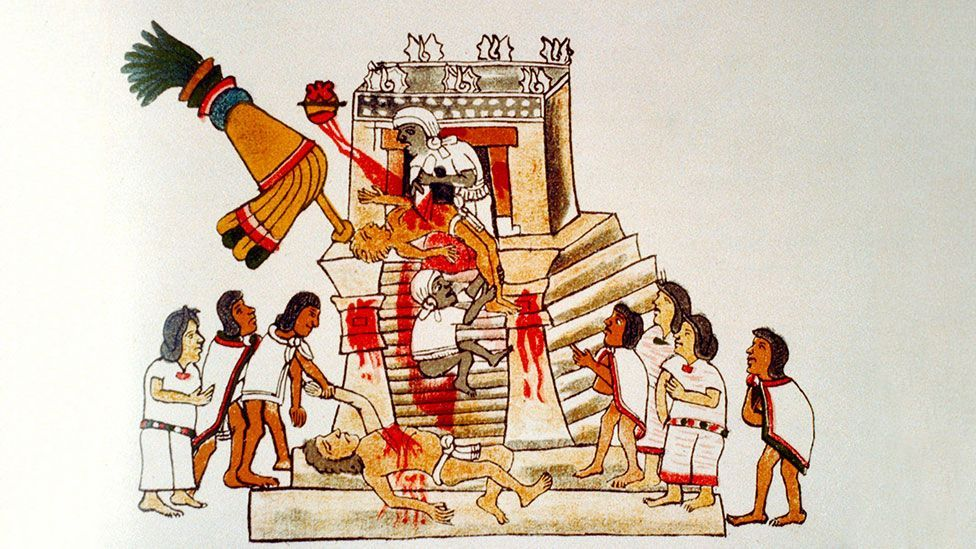

̴͈̊̊͐͝ ̴̨̳̩̩̜̀̈́̉̾̓̋̓̅̏ ̵͇͚͇͍̙͎͖̬͎̩̜̇̄̍̍̍́̂̉͊̀̈ ̶̯̺͉̥͂̇̊̓̆̓͂͠͝ ̶̡̘̹̉̅ ̶̳͍͔͍̫̤͇̀̄̂̀́̈̾͆͘ͅ ̷̨̢̧̡̼̹̤̤̤͔̯͙́̀̓̀̊̔̊̈́̒̚͠ ̸̧̛̟̫̙̯̯̱̻̈́̍̒̃͘͝ͅ ̸̢̡̛͇̰̣̩͚̭̝̩͖̬͋͐̏̈̔͐͑̈́́̀͘͝ ̸̩̣͇͌̊͂̍͒̒̿̈́ ̷̢̯̟̜͇͉͉̩̹̒̂̀̓̇͂̔̈́́̓̕̚͝ ̶̠̫̹͙̠͎̣̻̫͍̮͎͌́̑͒̏̈́͗̀͘ͅ ̷̢̬̻͉̬͖̼̖̮̘͂̓́̇́̎̓̋́ ̷̡̡̨̖̟̯̼̌͠ ̶̢̹̬͕̱͎̯̠̘̝̮̰̻̆ͅͅ ̷
Here's how a ̸̸̘̤̼̞̬̙̲̗̩͋̏̽́͘͝s̷͔̰̩̺͋̏͛ͅh̵̢͉̖̤͋͊͒̅̍̀̊̊̂͝a̴̢͙̠̫̦̘̫̯͕̭͚̮̽̍̐a̙̙w̵̥̙̳̓̂ä̴̡̛͙͇̘̯̞̟́͗̈́̂̓͘ͅr̸̨̛̠̘̘̩̩̍̀͗̿̎̓̆̿̍͒̓̒̈́b̶̧̝͈̙̜̙͎̈͂̇͌̄̋̓͌̋̓͘͘̚f̸̬̺̞͈̤͓̻͈̻̣̱̠̲̥̾̓̈́̈̍̿̄̕͘d̴̢̡̬̥̞͉̂͑͐͋͠͝j̸̢̮͉̤̀̓̈́͗̃͐̓̽͘͘͜͝ḣ̴͓͎̥̈́͐͜v̵̺̄̓̑̒̈́̈́̂̄̈͝s̸̛̺̀̾̄͋̾̓͐̎͝f̵̢͇͇̼͙̮̱̹̠͈́̃ is made:
̴̧͙̹̰̠̖̱̖̍ ̶͍̞͖̳̙̥̙̲͙͓̅͗̓ͅ ̶̡̨̡̫͓͎̭̟̲̏̔͂͊̀́̀̎͑̋ ̴̛̫̱̖̝͖͍̹͚̽͆͊̊̐̅̓̄͗͌̓͘ ̵̧̙̓̑͊̀̌͐̿ ̸̡̼͕͈̫̜̣̝̣̘͌̒̎͗̆̌̈́͛̀͒̍̌͝͝ ̶͔̣̞̻͓̯̲̳̭̤̞͛ ̴̫̞̗̖̭̼̥͑̊̂̓͠ͅ ̸͇̪̮͇̱̫̒ ̸̖̦͂̇̎̆͆ ̸̖̠̯̲̝̤̗̤̝̼͚̋̒ ̶̛͙̎͒̿̒̈́̋͂̔ ̵͇̬̝̘̝̭̻͎̤͆́̍̓
̶̢̭͖͈̻̻̈̀͐͋̀̒̏̓̈́̐͊̈̕͜͝ͅ ̷̙̳̟́́͊̑͗͒̅͌͂͝ͅ
̴̢̨̙̘͎͙̣͖͕̜̘̮̌̃̊́́̈́̓̃́̌̀̿͘͝͝
Ingredients:
- beans
- beans
- beans
- beans
- beans
- beans
- beans
- beans
- beans
- b̵̨͇̞͖̥̘̝̲̞̊́̽̚͠eans
- b̸̺̞̪̰̖͇̠͓͕͕̤͍̥͓̏́́̅̏̿̾̄̓̂͛̈́ę̷͔̠̦̻̺̼̫͙̩̟̻̋͐̈́͂a̶̢̮̙͚̼̯̪̤̩̤͖̙͍̣͐̊̂̎͘͜ns
- b̸̯̣̯̳̝̖̖̟͍͓͇͊̍̾̐͆̿͋͋̈́́̑͊͘è̶̜̀͗̆̕͜͝͠a̷̧͍̽̊̑͆́̊̉̿͛͐͌ņ̸̭͔̮̩̗̗͕͔̟̹̰̂̐͋́̽̂̑̅̈́͒̽́́͘̕s̸͎̼͖̭̻͚̭͉̱̞̼͔͙̦̙̆͊͌̀̉̏
- b̴̛̜̬̳̤̠̜̬̼̠̜̈́̓͜͜e̴̙͖̓̃̔̈͐̃̅̒͌̀͛͑͘͝ả̵̠̻̜͔̤͔̱̠̼͍̥̬͙͆͌̎̈́͂̌n̵̡̺̪̰̰̠̔͒ṣ̷̢͈̘̦̱̙̣͈̱̿͝e̵̡̫̩̼̘͍̼̲̬͙͉̝̫͒̓̉̅͐̔̑̔̔͐̄͘ŗ̴̗̜̝̜̟̭͑͋͝a̴̢̡̨̨̯̖̯͍̫̫̙̳͈͉͇̓̃̈́̎͊p̵̧̻͉͙͚͕̟̦̤̪̜̊̆͜ͅḩ̷̰͈̩̬̬̪̫̲̞͍̲͚͖̊̍̊͌͋̓̔̄͂̅̚į̶͎̗̞͉͉̯̬̘̀̑̾̾̀͋͊̏̐̓ṃ̶̧͙̖͚̻͙̗̥̦̞̘͘ͅ ̵̧̱͈̮̝̱̬̦̝̤̬̟̈́̍̎́̓̋̅͋͌̈́́́̉͠ ̸̢̢̟͍͕̘͎̣͉̹̝̗͂̅̓̈́̾͐̽̂͑͒͝͝͠ ̸̡̢̝͉̫̖̙͕̬̤̗̟͔̼̮̀ ̷̠̤̫͌̀̓͊̾̽̔̾ ̵̭̖̖̥̣̙̐͜ ̵̧̛̣͙͇͈͠ ̵̛̈́̏́̈́̽̆̔̈́̈́̆̕͜͝͝͝ ̵̧̡̧͍͕̱͍̠̣̺̤̝̱̇̂̾̽͊͊̍̈͊͝
̸̘͓̯͓̜̭̇́̏̔̂͘͘
- ̴̘̳̭̭̫̲̩͙̯̪͂͊̈̄̓͘͝ ̸̡̡̛͕̲͚̟͉̭̮̼̪̜̥̬̐͛͂̓̂̉̀͘͜͝͝ ̶̛̘̫̲͛̽̆ͅͅ ̶̥͙̱̅͋̕
̴̛̛̛̣̟̜̳͎̘̲͍͕̠̼̙̱̪̓̉̇͠ś̶̢͎̻͉̺͎̖͇̎̆̋̿̌͆̾͒͘̕e̴̡͎̱̺͙̫̯̯̝̻̥̳̒͑͑̇͜r̷̞̜͙͍͚̖̠͖̜̓͊̇̿̑͊̚a̵̡͈̗͔̬͍̘͌̉͐̐̏̓̈͛̌̎̚͜͠͝͠p̴̨̧̛͎̯̪̗̻̩̻̞̐̒̓̀̓̒̀̃̌̕h̶̬͈̜͕̀͜ḭ̷̥͕̤̬̫̰̱̟͆̿̓̑͑̓͗͊̀̃͂̑̒̕͜͜͜͝ͅm̴̧̡̨̬͉͎̹͓̘̯̺͕̄͋͛̇̀̃͜͝ ̷̡̣̱͖̣̭̤̼̻͓͋̀̈́͐ͅͅ ̴̨̗̠̰̤̗̍̍̿͠ ̵̢̙̞̥̝͕̣̟͐̈́̓͋̋̌̅̚̕ͅ ̵̛̝̰̘͔̈́̈́̾́̅ ̸̢̢̱̟̘̙̅̃ͅ ̴̢͎̳̣͙̝̗̬̝̭̝̊̌͛ ̵̭̣̙́̓̈́̓̔̈́̌̓̕ ̸̧̯̤͔̝͎͓̠̰̭̟̲͙̟̺́́͆̕̚ ̵̡̡̠̜̫̗̬́̐̒̓͐̾̈͑ ̵̻̈́͊̔̀́͆̐͑͋͝
̴̡̡̨͍̤̮̮̩̺̪͕͖͖̠̍̄̐̒
- ̶̧̢̦̘̖͕̻̥͈̙̜̌͆̋ ̶̢̛͎͈̣͔̩̽̀͛̑̋̌̔̔͛́͝ ̴̨̙̪͉̼̠̩͚̭̐̇̓͆̌͛́̾͝ͅ
̸͍̝̲̟̠̦͊̓̀͆̓̉̐̄͂̈͐̍͆̒͘k̴͔̺̲̣̠͈͎͔̠̺̩̱͓̇̂́̈́̂̔̀̎̆̑̀͘í̵̦̦̥́͆̓͌̆́̇̀͌̆l̶͙͙̱̱̩̖͇̼̝̭̉́̃́̆͒̅͊̓̄̚l̷̛̥̥̦̓̋̐̔͒̾̕͝͝ ̶̛͎̭̗̗͉̤̘̗͔̱͕̄͌̔́̌̋̀̈͠e̴̡̪̻͓̟͇̝͔̼̦̦̰̍̋̉́̚ͅͅv̵̟̝̘͈̬̔̇̏̅͘e̶̤̗̰̜̘̭͊̄̀͛̏͝r̵̢̠̮͇͍͂̇̋̿̾͂̑̄̒ỳ̴̺͖̘̣͔͈̥̳͎̠͒̒̉̽͊̄̇̀̇̕ô̷͎̮̭̹̘̤͓̯͍̬̬̘̩̊̾̀̈́̉̈̿̐̈́̑̀͝͝ņ̸̛̙̌̅̈́͐͝͝ẹ̸̢̨̧͌̋̆̊͛̀̓̄̚ͅ ̶̨̟̮̥̫̱̫̥̜͈̺͓͉͇̣͌̂͒̈́̄̾̄̕͝
̵̛̙̋̀͆̍̒̋̀̔͒ ̴̲̪͙̰̜̑ ̵̬̹̻̟́ͅ ̶̖͖̗͕̬̆̋́̋̈́̿͋͑̈͂͝ ̶̧̛̹̠̙̼͔͚̝̓̃͗̍̇̈͝͝ ̸͖͓̭̱̣̞̱̌̈́̂̿̊͂̐̀̽̏̏ͅ ̸̥̀̾̓̀̃͒̋͑̒͋͘͝ ̵̫̗̝̭͑̐̈̐̆̔̿̒̒̚ ̶̨̛̮̣͇̠̹̮͓͙̒͑̏̈̀͆͛̀͌̑͊̚̕
- ̸̪̬̭̞̣̫͎̯̺͓̆͑͒ ̷̘̞̗͈̳͍̺̥͎̉̑̑̆̇͆̒̈́̀̎̚ ̷͉̞͖̑̊̿͌͒
̷̟͕̦̘̪̀̒̔̎̑͂̿̇̋̌̚͝k̵̡̛̠͍̈̿̇̒́̏͐̆͌̈i̸̫͇̎͑̒̈̔̈̃͘̚͝l̴̛̫̟̓̓̒͆̀͒͆̚͜͝l̴̢̖̠͑̃̔̄̓̉͐̕̕ͅk̶̬̦̖̘̟͍̲͆̀i̷̧̧̨̭̦̩̟̭̩͋̇̐͆̽̌̓͘͘l̵͈̟̠͈̐̒̕l̵̡̛͉͇̝̫̜̬̰̊̊̈̋͒k̸̛̖͎͍̼̲̭͇̖̮̦̋͒̏̀̇͋͗́̓͒̅̄ͅi̴̧̛̫̜̻͉̓̆̈͒̀̃́̽̅̃̊͝l̴̞̠͇̤͔̔͜͠l̷̢͉̹̜̦̠̘͉̬͓͒̍̄̓̀̓̊̓̋̕̚̚͝
̸̡̢͍̝̖̲͔̝̺̥̮̗̬͇̋̊̈̔͊̄͑͑͐ ̸̢̞̠̳̗̫̖̩͔̻̱̬̺̙̇̎̀̇̃̃͐̂̈̍̾̈́͐ͅ ̶̨͔̜͖̖̮̹̖̭̩͛ ̵͇̣̘̺̥̤̜̖̭͔͉̲̊͘ͅ ̷̡̦̥̋̀̐͂͂͛̈̎̃̀͜͝͝ ̷̠̺̹̱̝̺̫̺͈͖̣͙̹̲̼͆̊͆̆̉̒̿ ̷̨̧̡͍̰͙̦̬̮̦̲̉͜ͅͅ ̶̢̛̗͔̬̦̻̖͙̎̄̾́́͂͝ ̸̡̯͚̼̼̣̱̺̲̬̰͚͇͔̀̏̓ͅ ̵̛̻̊̆̉̇͊̽̒͒͊͌͝͝ ̸̡̡̟̰͉̠̟̟̯̪͎̾̐̎̈̂́͌̓̂̇̚ͅ ̶̡͙̞̬̦͙̹͆͂̉̄̚͜
̵̡̬̹̣̺̤͖͖̰͓̮̮̝̠̈́͊̈́͛́͂̀̓̈́̃̇͊̾͘ͅk̵̡̨̠̰̹̘͎̝̪̲̜̜̹͘ͅỉ̶̡̨̢̗͉͓͇͇̙̹̯͇̻́̌̊̒̏̔̾̓̈̚̕͜ļ̷̡͖̗͚̖̦̖̺̜̪̭͗͑̃̋̓̏̇͗̈̌͑̓̕͜͝ļ̴̡̩̳̺̮̯̱̰͎͖̞̭̤́͌̒̑̀̍́̑́̌̑̕͝͠͠k̸̢̛͎̟̘̑̉̃̓̒͛͌͒̚̕͝͝î̴̠̲͕̣̮̲̍͂́̆̅̾͐͒́̀͜l̴̦̝̬̟̋͌͗̇̕͝ļ̴̮̻͖̜̫̺͕̃́̇͊͠k̶̢̤͇̗̺͈̟̤͉̮̐̈̾i̴̬͎̪͉̮̰̗̣͕̪̩̰̦̋̌̅͘l̶̡̧̹̣͚͈̰͓̖̦̫͕̻̀̈̅͊͐́̂l̶̢̢̧̦̣͍̻̻̪̲̺̟͉̜̄͗̅̓̾̈́̅̍̊͐͋͝
̴̡̧͉̤̱͈̂͌̌̓͊̀̀͌̍̾̀̚̕ ̷̡̨̫͔͎̺̘̘̠͖̈͗̿͐́̀͆̑͆̀̓͠͝ ̸̡̢̧̞̹̮̻͇̳̪͖̼̖́͑̎̍̏͛̇͛̎͌̕͝ ̶̢̧̥̬̪͇̻͕̖͈̱̱͙̉͗̅̽̆͛̓̓͒͌̚͜͠͝͠ͅ ̷̧̥̮͈̺̠̺͖̿̆̉̈́͑͘̚ ̵̢̼̦̦̼̜͔̝̬̜̘̝̆́̋̑̈́̿̂͜͝ ̷͉̖͔̫̘͛̿͒̽̎̈́̍͘̕ͅ ̴̱͉̎̆͑̉̎͐̚ ̴̢̻̱̩̼͚̦̞̑ͅͅ ̴̡̨̢͓͖̱̼͕̮̃̀̀͂̈́̓̓̓̈́̓͠͠ͅ ̴̡̢̹̝̦͎̺͇̻̔̏̀̏̔ ̵̮̠͎̪̼̽̈́̅̓̒͝
̸̩͖͓̺͚̖̯̱͚̤̙̑͂̆ͅͅͅk̶͔̼̬͙̰̰̪̖̿͑̄̅̿͆́̽́͐͜͝ͅi̴̧̢̝̪̹̣̦͎̠̓̽̎̈́́̒̆̒͗̃̔͜l̵̡͕͖̪̰̫̹̣͓̺̩͚̪̆l̶̢̞̰̤͎͇̞͕̗̬̻͔͙͋́͑̾ḳ̴̛̖̗̘̜͕͇̖̜̞̤̿̑̍̃͝į̸̢̤̩̺͇̬͎̘͖̰̱̮̃̒̔ͅĺ̵̼̜̪̗͍͈̝̬̩̭͓͖̫͍̈́ͅl̸̨̨̢̰̰̪͕͇͓̘̻̦͙̈̑̂̀̆͗́̽̓̃̀̾͑͠k̶̛͙̥̗̅͒̈͂̉̒̅̽̒ị̶̧̨̧̢̛̥̥͎͂̂̍͒̑̀̿̑̓̀͒̓̕͝l̵̟̘̙̳̳͓̹̮̜̬̥̪̅͛̓l̴̨̛̛̯̰̮̮͌̇́̏̾̋͘͠͝
̷̖͈̺͋́̋̂͗͐͒ ̵̭͔̹͚̟̞̺͇̭͈̀͗͊̔̏̎̈̋̓̚͝͠ ̸̨̩̙͎̼̣͚̮̮͙͎̙̰̓͊̉͘ ̶̤͇͓̬̮̪̬̜̺̝̗̊̓̈́̉̏̋͊̐̂̋̈́́͛̚͠ ̷̢̛̙̣͚̼̝͉͇̄͆̓̀̋́͒̉͛͜ ̷͍̺͆͆̔ ̵̨͚̣̯̬̯͓̮̰̗̫̗̲̮͑͆̄̔̈̀̃͜͝ ̵͈̱͑͊̂̌͊̌ ̶̥̬̼̺̮̯̣̩̀̒͜
- hummus
- Sacrifice one child to the ̷͓̝̜̋̓́͝ ̷̡̨̩̜̹̼̙̜̗̟̖̯̹̳̞̐͌̒ ̵̡͙̱̺̮͙̣̜͐ ̷̨̲̱̼͔̬̿̎̊͝ ̸͕̯̒̈́̀͊̉̄̚̕͠ ̵̧̢̳̣͚͙̲̙͔̖̦͕́̈́́̓̇̅̿͛͐̆̕͝ ̴̡̳̭̲͔̦̼̯̺̜̟̘̦̗̎̎̌̓̅͆̌̀͛̍́͋̌̈ ̸̨̢̡̝͕̘͒ ̴̻͍̥͎̐̏͋͑͗̑ ̷̼̈́̓̃̽͐̎ ̸̜͈͈̙͓̼̙̼̙̟̯́̿̉͂̏͐ề̸̢̱̭̼͍͔͙̃͋̒́̏g̵̨̛̠͍̫̹̬̫̅̃͐̒͊̇ŗ̶̹͔̖͕̞̻̠̥̠̠̣̹̠͌
̶̢͓̲̖̟͉̖̤̺͎̄̾͗́̓̓̇́́̕͘͝͝g̴͙̜͚͚͉̣̬͓͔̩͉̜̅̍̀̐̓r̴͚̘͎͓̮̳̔̈̈́̾͝͠e̸̦͚̫̽̂̾̉͊̋a̷͍͉̬͇̞͓̩̥̮̤̘̹͔̹̓̎͑̚t̵̢͔̱̘̖̝̳̩̭̰̭̮͔̏͆̐̐̓͗͗̈́́́̐̑͝ ̶͕͎͑͋̊͒̓̒͊̊̿̓̀̚͘H̵͉̦͉̹̜̗̀̊͋͌̍̾̅̊̐͑̕͝͝g̵̟̻̻͓͎̰͍̠̼̙͈͇̲͑́̌r̸͙̼̬̙̫̟̟̰̒̿̊͐̑̋̿̀̓̎ê̶͉̏̐̊̊͛̒́̿͛̓̚̕ȕ̵̢̳̥̣̱̬̥̞͉̫͎̝̗̭͛ñ̶̢̮͖̦̗̳͇͍̩a̷̭͖̟̱̦͛̂̑͜͝b̶̻̱̲̄̍̑́ ̵͎̍̌͆̎̈́̂̿͐͠K̶̟̟̮̮̘̹̩̪͓̦̻̅̓̏͒̚̚͝ū̵͇̙̻͎̜͚̗̼̣͍v̴̫̑͒͊̊w̶͖̬̞͉̫͚͗̈́̀̓̇͂̐̃͆͂̐̋̅̕͝v̶͙̝̼̼͇̬͓͍̎̓̉̉̕͝r̴̡̛̜̫̩͔̱͓͎̹̳̰͙̋͐̈̈́̎̌̓̌͘̚͝ͅę̷̢̹̳̘͕̖̼̳̫̰̮͌̓̀͋͛̆͋̒̿͛̊͑g̵̮̥͎̹̺͖̟̗̗̓͐̾͗̅͗̈̔͂̐̄͗r̷̫̲̼̼̮̙͆̓̊̕͝͝ê̷̲̾̍̆̒̿̄̿̓h̵̝̮̲͚͕̣̟͎͂̆ḧ̵̛̬̺͎̪͉̼͈́͋̽͛͋͊͐͒̅̅̚̚͝t̷̹͎̝́͐̓̀̑̎͛̀̊̿̈́̂̎r̴̡̝̣̻͉͇̹͖̠͓͖̣̫̤̆̈́̒̆̈́̽̃͂͋͜͝é̶̛̹̻́̓̒̒̈́̚r̷̢̫͍̟̺̳̬̙̼̼̬̺͐
̸͖̋r̵̜̗̺̐̿̾̏̑̉̇̏̔̿̊͌̽̕͘g̸̢͚̣̤̗̱͔̋̓̔̒̋̊̄̌̑̏̒͂̓̍͜é̵̦͇̇͊̎͌̒͊͒̔͗̂͘ ̶̢̳̣̝͕̫̈́̄̅̃͌̎͜͝ ̸̡̡̧̢̫͇̱̘͉̮̳͍̯̮͒̈̊̆͒͆͘̕͠͝͠͝ͅ ̴͇͈̫̃͐̏̾͐̈ ̵̢̫͚̻̖͎̞͓̗̗̺̹̱̺̗̊͊͐͐̑̌̏̔̽͆͊̋͘̕ ̸̝͕̠̦̬͉̰͊̂͗̍ ̷̛̛̞̩̰̱̙̅̓̅̈́́̾͝ ̷̧̢̢̝̟̦̠̣̝͍̼̘̤̀ͅ ̷̥̱̦̈̎̔͐̐̔̂̐̈́̀͠͝͝ ̷͈̠͕̖̰̘͇̐̀̒̋̊̓͛̈́͑̽̉̋͝ͅ ̸̈͊̉͋̈̅̀̎́͊̓ͅ ̶̬̘̠͙̼̮̙͇͖̹̮̝̐͊͌̈́̑͋̄̚͝͠ ̷̢͕͚̠̈͒̀̃̐̍̀̓̿̈̔͒̕͠g̷̢̡͔̳̳̒̄̇̈͌͊̆̂̎͌̓̿̋͠r̶̪̼̜̻̱̯̣̉̿̿̿̈́͐̃̿͂͊̚͝e̸̛̹͑̏̌̽̓̒̊̀̽̕͝ ̴̡̲͍̫̯̬̹̫̻̣̪̜̤̮͗͋
̵͔̲͎̪͚̝͔͇̰̳͎̏̓̐̄̈́͋͑͛͊̔̅̽̕̕͠ ̷̬̩̳͕̫̝͈̜͕̦̍̔̂̽̎̅̃͛ͅ ̵͈͆
̸̱̯̏̈͗̐ ̴̺̌̀͊̉̒̇̇̌̀̓͂͐͠͝ḥ̵̦̝͈̱͋̔̍t̵̘̭̯͔̯͎̼̗̗͇̻͎͇̘̀͒̋̈́̒͆̓̑́̇̏͝͠ͅ
- ask him for the shwarma politely
- eat shawarma.

go to top